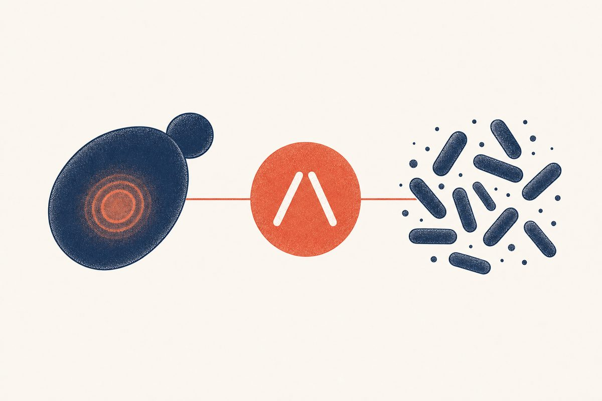

Key Takeaways
- Yeast infection is fungal (Candida); BV is a bacterial imbalance. CDC recommends completely different medicines for each, so the distinction matters.[1]
- Itching and soreness are typical of yeast; a fishy odor is one of the diagnostic criteria for BV. No single symptom settles it on its own.[1]
- Vaginal pH is a quick objective clue: a normal pH below 4.5 fits yeast, while a pH above 4.5 is common with BV (or trichomoniasis).[1]
- Yeast discharge is typically thick and curdy; BV discharge is thin and milky and coats the vaginal walls, often with a fishy smell.[1]
- Yeast is treated with antifungals (fluconazole, clotrimazole, miconazole); BV is treated with antibiotics (metronidazole or clindamycin).[1]
- Self-diagnosis is unreliable: in one study of women buying an over-the-counter antifungal, only about one in three had a yeast infection alone.[4]

If your symptoms are discharge, itching, or a change in smell, the practical question is almost always the same: is this a yeast infection or bacterial vaginosis? Along with trichomoniasis, they are the infections most often associated with vaginal symptoms, they can feel alike, and yet they are different problems that need different treatment.[1] Self-treating the wrong one wastes money and delays the correct diagnosis.[4] Both are very common: an estimated 75 percent of women will have at least one yeast infection,[1] and in a six-country internet survey about 9 percent of women reported a 12-month period with four or more yeast infections.[7] A systematic review estimated that recurrent yeast infection affects about 138 million women worldwide each year.[6] The IDSA candidiasis guideline notes that the symptoms and signs of a yeast infection are nonspecific,[2] and a 2026 state-of-the-art review calls confirmatory tests essential when treatment does not fully work and in recurrent infection.[9]
Why the Difference Matters
A yeast infection is an overgrowth of a fungus, Candida, while bacterial vaginosis is a shift in the normal bacterial community, in which the normal lactic-acid-producing lactobacilli are replaced by high concentrations of anaerobic bacteria.[1][9] The distinction is not academic:
- Treatment differs entirely. CDC's recommended treatment for yeast is an azole antifungal, and for BV it is the antibiotic metronidazole or clindamycin.[1]
- The health implications differ. BV is associated with a higher risk of acquiring sexually transmitted infections and, in pregnancy, with complications including preterm birth, which is why correct diagnosis matters beyond symptom relief.[1]
- Some people have both, and one can follow the other. In one study, about 1 in 5 women who thought they had a yeast infection had a mixed vaginitis,[4] and BV may predispose women to a yeast infection, either on its own or after antibiotic treatment.[9] That is one more reason to confirm the diagnosis rather than guess.
Side-by-Side Comparison
| Feature | Yeast infection | Bacterial vaginosis |
|---|---|---|
| Type of problem | Fungal overgrowth (Candida) | Bacterial imbalance |
| Main symptoms | Itching, soreness, pain with sex or urination | Discharge and odor; many women have no symptoms |
| Discharge | Thick, white, curdy | Thin, milky, often a fishy odor |
| Vaginal pH | Below 4.5 (normal) | Above 4.5 |
| Microscopy finding | Budding yeast, hyphae or pseudohyphae | Clue cells (bacteria-coated cells) |
| Classic treatment | Fluconazole or topical azole | Metronidazole or clindamycin |
| Sexually transmitted | Usually not | Linked to sexual activity; cause not fully understood |
Symptoms Compared
Itch and smell are useful pointers, although none of the typical yeast symptoms is specific to yeast:[1]
- Yeast infection typically causes vulvar itching, soreness, swelling and redness, pain during sex, and burning when urine touches the irritated skin (external dysuria).[1]
- Bacterial vaginosis centers on the discharge and its odor, and many women have no symptoms at all: in a nationally representative survey, most women with BV were asymptomatic.[1]
Discharge and Odor
Discharge adds useful clues:
- Yeast: typically thick, white, and curdy.[1][2]
- BV: thin and homogeneous, with a milklike consistency that smoothly coats the vaginal walls, and a fishy odor that may be noticed before or after a drop of potassium hydroxide is added during an exam (the whiff test).[1]
A yellow-green or malodorous discharge, with or without vulvar irritation, points in a third direction: trichomoniasis, a sexually transmitted infection. Most people with trichomoniasis have minimal or no symptoms.[1]
The pH Test
The vaginal pH is a quick objective way to help separate the two. It is measured with pH paper:[1]
- Yeast infection: associated with a normal vaginal pH, below 4.5.[1]
- BV: a pH above 4.5 is one of the four Amsel criteria. An elevated pH is also common with trichomoniasis, although trichomoniasis can occur with a normal pH. Because pH testing is not highly specific, the discharge should also be examined under a microscope.[1]
How Each Is Diagnosed
In the clinician's office, the cause of vaginal symptoms can often be found with a pH test, a potassium hydroxide (KOH) test, and a microscope exam of fresh discharge.[1]
- Yeast is diagnosed in a woman with symptoms when a wet preparation (saline or 10% KOH) shows budding yeast, hyphae or pseudohyphae, or when a culture or other test is positive for yeast. Microscopy misses about half of the infections that culture finds, and yeast culture remains the reference standard.[1]
- BV is diagnosed with the Amsel criteria (at least three of four: thin, homogeneous discharge; clue cells; pH above 4.5; and a fishy odor on the whiff test) or with the Nugent score of a Gram-stained slide, which is the reference standard laboratory method.[1]
Molecular (NAAT) tests for BV can be run on clinician-collected or self-collected swabs in women with symptoms, and culture or PCR is recommended in complicated yeast infections to confirm the diagnosis and identify less common species.[1]
How Each Is Treated
Yeast infection is treated with an azole antifungal: a single 150 mg oral dose of fluconazole, or a topical course of clotrimazole, miconazole, tioconazole, butoconazole, or terconazole.[1] In pregnancy, only topical azoles applied for 7 days are recommended, and the single 150 mg oral fluconazole dose should not be used because it might be associated with miscarriage and birth defects.[1] See the yeast infection guide for full dosing.
Bacterial vaginosis is treated with an antibiotic. The recommended regimens are oral metronidazole, metronidazole vaginal gel, or clindamycin vaginal cream; alternatives include oral clindamycin, clindamycin ovules, secnidazole, and tinidazole.[1] Treatment is recommended for all pregnant women with symptoms, and any of the recommended regimens can be used in pregnancy; tinidazole and secnidazole should be avoided.[1] BV management, including how often it comes back and the options for repeated recurrences, is covered in the bacterial vaginosis guide.
Both are usually short courses, but the medicines are different, which is why a careful history, examination, and laboratory testing to find the cause come first.[1]
Treatment at a Glance
| Condition | Drug class | Examples | Availability | Typical course |
|---|---|---|---|---|
| Yeast infection | Azole antifungal | Fluconazole, clotrimazole, miconazole | OTC (most topicals) or Rx (oral and some topicals) | Single dose to 7 days (some topical regimens 7 to 14 days)[1] |
| Bacterial vaginosis | Antibiotic | Metronidazole, clindamycin | Prescription | 5 or 7 days for recommended regimens; alternatives range from a single dose to 7 days[1] |
Why Misdiagnosis Happens
The overlap in symptoms makes guessing unreliable. In a study of 95 women who were buying an over-the-counter antifungal for a self-diagnosed yeast infection, 33.7 percent had a yeast infection alone; the others had BV (18.9 percent), a mixed vaginitis (21.1 percent), a normal exam (13.7 percent), or another diagnosis.[4] In an earlier emergency department study of 71 women with discharge, itching, or pain, 32.4 percent had a positive yeast culture, and the classic signs of yeast were also seen with other causes of vaginitis.[5]
The practical takeaway: a past yeast infection does not make self-diagnosis reliable. In the same study, women with a previous clinician diagnosis of a yeast infection were no more accurate than women without one.[4] Anyone whose symptoms persist after an over-the-counter product, or come back within 2 months of treatment, should be evaluated and tested.[1]
Self-Testing and When to See a Clinician
Home pH kits can help, because a pH above 4.5 points away from yeast and toward BV or trichomoniasis, but pH testing is not highly specific and cannot confirm a diagnosis on its own. In the clinic, pH, a KOH test, and microscopy can often identify the cause, with yeast culture as the reference standard for yeast and the Gram stain (Nugent score) for BV.[1]
See a clinician if this is your first episode of these symptoms, if there is a strong odor, pelvic pain, fever, or bleeding between periods, if you are pregnant, or if symptoms persist after treatment. Recurrent yeast infections can be idiopathic or linked to frequent antibiotic use, diabetes, or other host factors, although most women with recurrent yeast infections have no apparent underlying condition; persistent or recurrent BV is also common and is a reason to return for evaluation.[1] In one study of 65 women on maintenance antifungal therapy for recurrent yeast infections, a history of BV was linked to a higher risk of a new yeast episode.[8] Recognized risk factors for yeast infection also include pregnancy, uncontrolled diabetes, immunosuppression, and antibiotic or glucocorticoid use.[3]
For deeper dives on each side of the differential, see the vaginal yeast infection guide and the bacterial vaginosis guide, and for the postmenopausal causes of burning that are often confused with infection, the vaginal dryness treatment guide.
Self-Testing vs a Clinical Exam
| Approach | What it tells you | Limits |
|---|---|---|
| Home pH strip | pH above 4.5 points away from yeast, toward BV or trich[1] | Not highly specific; cannot confirm the diagnosis on its own |
| Over-the-counter antifungal trial | A past clinician diagnosis did not make self-diagnosis more accurate[4] | Wasted and delayed if the real cause is BV or another condition |
| Clinician exam (pH + microscopy, with culture or PCR when needed) | Identifies the cause; culture or PCR identifies the species in complicated yeast infections[1] | Requires a visit or a lab sample |
Red Flags
- Fever, lower abdominal or pelvic pain, or bleeding between periods
- A strong, worsening odor or yellow-green discharge
- Symptoms in pregnancy
- Symptoms that do not improve after a full course of the correct treatment
- Frequent recurrence despite appropriate therapy
Any of these warrants prompt clinical evaluation rather than another round of self-treatment, because they can signal pelvic inflammatory disease (PID), a sexually transmitted infection, or another diagnosis that needs targeted care. PID is often missed when its signs, such as abnormal bleeding or vaginal discharge, are mild or nonspecific.[1]
Frequently Asked Questions
Look at the symptoms and, ideally, the pH. Itching, soreness, and a thick, curdy discharge with a normal pH (below 4.5) point toward yeast. A thin, milky discharge with a fishy odor and a pH above 4.5 points toward BV. No single symptom is specific, so confirmation by a clinician with pH testing and microscopy is the most reliable approach.[1]
Yes. A fishy odor, noticed on its own or when a drop of potassium hydroxide is added during an exam (the whiff test), is one of the diagnostic criteria for BV and can also occur with trichomoniasis. Odor is not among the typical symptoms of a yeast infection, which makes it one of the most useful clues.[1]
No. Yeast is fungal and is treated with an antifungal (such as fluconazole or a topical azole), while BV is bacterial and is treated with an antibiotic (metronidazole or clindamycin). Using the wrong product can delay treatment of the real cause.[1]
A vaginal pH below 4.5 is normal and fits a yeast infection, while a pH above 4.5 is common with BV or trichomoniasis. It is a fast, objective clue, but it is not highly specific, so it is not a complete diagnosis on its own.[1]
Both cause abnormal discharge and discomfort, and the differences can be subtle, especially without pH testing or microscopy. In one study, only about a third of women who self-diagnosed a yeast infection had a yeast infection alone; the others had BV, a mixed infection, another diagnosis, or a normal exam.[4]
BV is linked to sexual activity, including new or multiple partners and not using condoms, but whether it results from a single sexually transmitted germ is unknown, and routine treatment of sex partners is not recommended. BV does raise the risk of acquiring STIs. A yeast infection is usually not sexually transmitted.[1]
Both are very common. An estimated 75 percent of women will have at least one yeast infection, and BV is a highly prevalent condition and the most common cause of vaginal discharge worldwide.[1]
See a clinician for a first episode, a strong odor, pelvic pain, fever, bleeding between periods, symptoms in pregnancy, or symptoms that persist after treatment. Symptoms that persist after an over-the-counter product, or come back within 2 months of treatment, should be evaluated and tested, and these symptoms can point to BV, trichomoniasis, pelvic inflammatory disease, or another condition needing specific care.[1]
References
- Workowski KA, Bachmann LH, Chan PA, et al. Sexually Transmitted Infections Treatment Guidelines, 2021. MMWR Recomm Rep. 2021;70(4):1-187. doi:10.15585/mmwr.rr7004a1
- Pappas PG, Kauffman CA, Andes DR, et al. Clinical Practice Guideline for the Management of Candidiasis: 2016 Update by the Infectious Diseases Society of America. Clin Infect Dis. 2016;62(4):e1-e50. Epub 2015 Dec 16. doi:10.1093/cid/civ933
- Gonçalves B, Ferreira C, Alves CT, et al. Vulvovaginal candidiasis: Epidemiology, microbiology and risk factors. Crit Rev Microbiol. 2016;42(6):905-927. doi:10.3109/1040841X.2015.1091805
- Ferris DG, Nyirjesy P, Sobel JD, et al. Over-the-counter antifungal drug misuse associated with patient-diagnosed vulvovaginal candidiasis. Obstet Gynecol. 2002;99(3):419-425. doi:10.1016/s0029-7844(01)01759-8
- Abbott J. Clinical and microscopic diagnosis of vaginal yeast infection: a prospective analysis. Ann Emerg Med. 1995;25(5):587-591. doi:10.1016/s0196-0644(95)70168-0
- Denning DW, Kneale M, Sobel JD, Rautemaa-Richardson R. Global burden of recurrent vulvovaginal candidiasis: a systematic review. Lancet Infect Dis. 2018;18(11):e339-e347. doi:10.1016/S1473-3099(18)30103-8
- Foxman B, Muraglia R, Dietz JP, Sobel JD, Wagner J. Prevalence of recurrent vulvovaginal candidiasis in 5 European countries and the United States: results from an internet panel survey. J Low Genit Tract Dis. 2013;17(3):340-345. doi:10.1097/LGT.0b013e318273e8cf
- Patel DA, Gillespie B, Sobel JD, et al. Risk factors for recurrent vulvovaginal candidiasis in women receiving maintenance antifungal therapy: results of a prospective cohort study. Am J Obstet Gynecol. 2004;190(3):644-653. doi:10.1016/j.ajog.2003.11.027
- Rautemaa-Richardson R, Sobel JD, Stone N, et al. State-of-the-Art Review: Managing Vulvovaginal Candidiasis. Clin Infect Dis. 2026;82(3):371-382. doi:10.1093/cid/ciaf673